A launch configuration in Eclipse describes all parameters required to start a program or run a test. Launch configurations are stored with an Eclipse workspace, but can also be shared with others.
Stardust provides two launch configurations for testing and debugging message processing scenarios:
Transformations launch configurations rely on parsing launch configurations to create input messages for the transformation.
The Parsing and Serialization Launch configuration Message Processing Test describes:
Launching a test based on this configuration parses the file content into a canonical DOM structure in memory and optionally serializes this DOM structure on the screen or in a file. For that serialization another serialization format than XML can be selected. This way serialization can be tested as well with this configuration.
To create a new launch configuration:
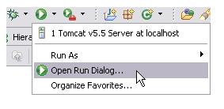
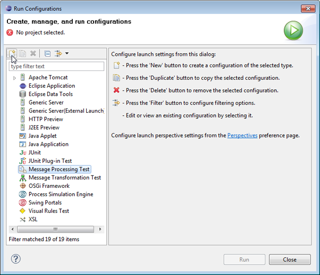
The following settings can be performed in the Message Processing Test Configuration pane:
In the Structured Data Selection pane you can select the project and model where the structured data is stored and the structured data to be read as source.
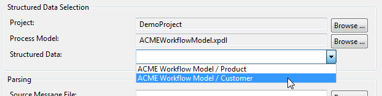
Figure: Enter Structured Data Selection.
In the Parsing pane select the source message file and the source message format:
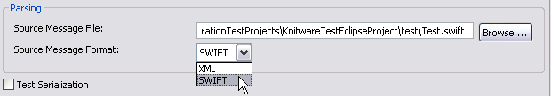
Figure: Enter Source Message File and Format for Parsing.
Note
In case your process model is a consumer model and referring to structured data in a provider model,
you need to import the related composite type manually. Export the composite type from the provider model as
XSD file and then import it to the consumer model by using the Import Types option.
You have to enable the Test Serialization option to be able to test the configuration. In the Target Message File field enter or browse to the message file, where you want your parsed message output to be stored. Select the format of the output message in the Target Message Format entry.
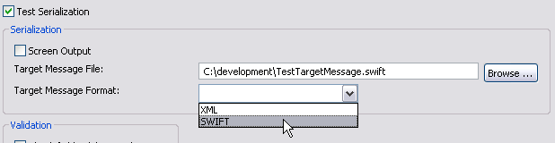
Figure: Enter Target Message File and Format for Serialization.
In case you want to view your output message on the screen, enable the Screen Output checkbox. The output message is then displayed in the Console view, which you can open via the main menu entry Window > Show View > Console. In that case, the Target Message File entry will be disabled.
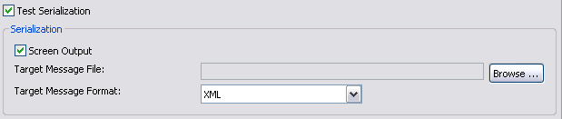
Figure: Enabled Screen Output
In the Validation part it is possible to choose the validation options to check field validation rules or message validation rules:
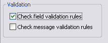
Figure: Choose Validation Options.
Based on message processing configurations, created beforehand, you can parse messages in the Message Transformation launcher. Therefore you have to create a new launch configuration, the Message Transformation Test configuration:
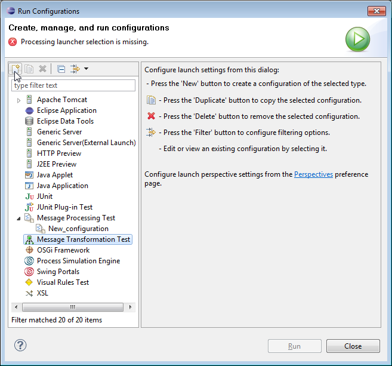
The following settings can be performed in the Message Transformation Test Configuration pane:
In the Transformation Selection pane you can enter the project name, a process model and the message transformation application:
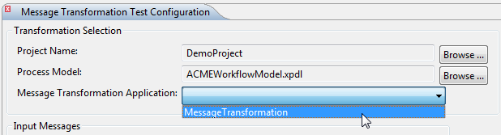
Figure: Transformation Selection
To choose the model, select the Browse button. A dialog will open with a list of available models:
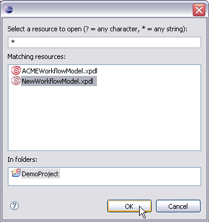
Figure: Select a Resource to open.
In the input messages part all available input message ids and according message types are displayed:
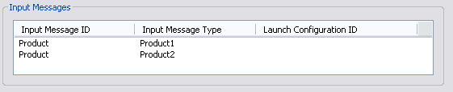
Figure: Input Messages
In the launch configuration id part, choose the configuration you want to use for the parsing from a list with previously created message processing configurations:
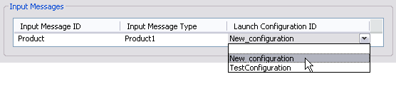
Figure: Provided Launch Configurations